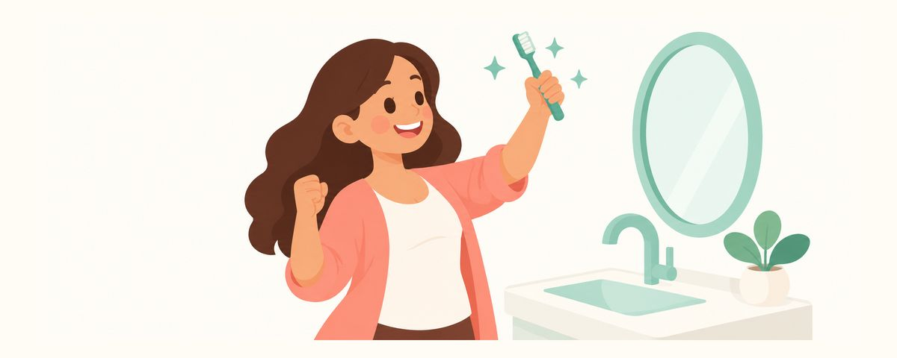

12歲28顆恆牙全部就位：讓孩子養成自己守護牙齒的刷牙習慣
通常在12到13歲左右，20顆乳牙全部掉光，28顆恆牙都已就位。這篇整理了為什麼這時蛀牙容易再增加、怎麼把刷牙交給孩子，以及爸媽要幫忙確認的地方。
重點一覽
- 通常20顆乳牙都掉了，28顆恆牙都已長好
- 刷牙是孩子自己的事，您每週檢查一次
- 持續每6個月檢查一次
六歲左右開始的換牙，到了12到13歲左右幾乎就結束了。現在孩子的嘴巴裡，要用一輩子的牙齒都到齊了。這個時期，守護牙齒的工作要從爸媽一點一點交到孩子手上。這篇整理了有什麼不一樣，以及爸媽要照顧到什麼程度。
一輩子的牙齒都到齊了
通常在12到13歲左右，20顆乳牙全部掉光，不算智齒的28顆恆牙都已就位（每個孩子不一樣）：八顆門牙、四顆犬齒、八顆小臼齒、八顆大臼齒。最後面的大臼齒中，前面四顆在6歲左右長出，後面四顆則在這個時候長出。
乳牙時期就算蛀牙，也還是「反正會換掉的牙」，但現在不一樣了。從現在起，任何損傷都會跟著一輩子。 恆牙一旦被磨損或蛀掉，就不會再長回來。
偏偏這個時期，也是蛀牙容易再增加的時候：
- 自己買、自己挑零食和飲料的機會變多。
- 補習和功課很忙，容易跳過刷牙或隨便刷一刷。
- 爸媽看孩子口腔的機會變少。
剛長出來的恆牙，表面還沒完全變堅固，比較容易蛀牙。所以現在的習慣，會在未來很長一段時間影響牙齒的健康。
智齒通常在17到21歲長出來，也有些會一直埋著，或根本沒有形成。到了十幾歲中後段的定期檢查時，如果牙醫師看過口腔和孩子的成長狀況後認為需要，會用環口X光等影像確認。不會只因為年齡就拍X光，所以現在不用先擔心。
孩子自己刷，爸媽輕輕確認
現在刷牙是孩子自己的事了。不過，爸媽幫忙確認還是有幫助。可以這樣分工：
孩子自己要做的事：
- 每天2次，用含氟牙膏刷牙。睡前刷牙一定要做到。
- 每天用1次牙線。牙縫是牙刷刷不到的地方，所以需要牙線。
- 如果過了13歲還有沒掉的乳牙，要告訴爸媽。
爸媽要照顧的事：
- 每週一次，確認臼齒內側和牙齦邊緣。在明亮的地方一起照鏡子看。
- 持續每6個月定期檢查一次。檢查時也確認窩溝封填有沒有好好附著，以及是否需要塗氟。
- 家裡準備什麼零食和飲料，還是由爸媽決定。以白開水和牛奶為主。
吃點心的關鍵是次數。就算量一樣，整天一點一點地吃，或慢慢啜飲含糖飲料，牙齒就沒有休息的時間。幫孩子養成在固定時間吃點心、吃完用清水漱口的習慣。在補習班的書包裡放一支小牙刷和水壺，也是好方法。
進入青春期後，爸媽說要看看口腔，孩子可能會不喜歡。與其像檢查一樣，不如簡短地說「我們只看一下臼齒內側就好」，再搭配稱讚，孩子會比較不排斥。比起嘮叨，這個年紀告訴孩子原因更有效。「現在蛀掉的牙，會跟著你一輩子」這句話，會在孩子心裡留很久。
爸媽常犯的錯誤，是覺得恆牙都長好了，定期檢查可以暫停。其實這正是蛀牙容易再增加的時候，每6個月的檢查最好持續下去。
常見問題
已經13歲了，還有一顆乳牙沒掉。
過了13歲還有乳牙沒掉，請告訴牙醫師。沒有鬆動的乳牙，可以用X光確認下面有沒有恆牙。
孩子現在自己刷得很好，爸媽還要繼續看嗎？
不需要每天看，但每週一次確認臼齒內側和牙齦邊緣會很有幫助。這是孩子自己刷牙時最常漏掉的地方。
智齒也要現在拔嗎？
智齒通常在17到21歲長出來。十幾歲中後段的定期檢查時，如果牙醫師認為需要，會用X光確認，所以現在不用擔心。
一定要用牙線嗎？
是的，建議每天用1次牙線。牙縫是牙刷刷不到的地方，容易蛀牙和牙齦發炎。
出現這些情況，請讓牙醫師看看
- 乳牙還在，而且沒有鬆動
- 該長恆牙的地方什麼都沒看到
- 牙齒重疊得很厲害，很難清潔
- 臼齒出現褐色或黑色的點，或吃冰的會酸痛
- 錯過了每6個月一次的定期檢查
在對的時候收到提醒
在牙齒日曆 App 中輸入孩子的出生日期（或預產期），這些文章就會在需要的時候以提醒的方式送達。免費使用，無須註冊。
參考資料
- ADA · Eruption Charts (2024)
- MOE_KR · 학교건강검사규칙(학생 건강검사·구강검진) (2024)
本文資訊僅供一般教育用途，不能取代專業牙科診療。關於孩子的狀況，請諮詢牙醫師。